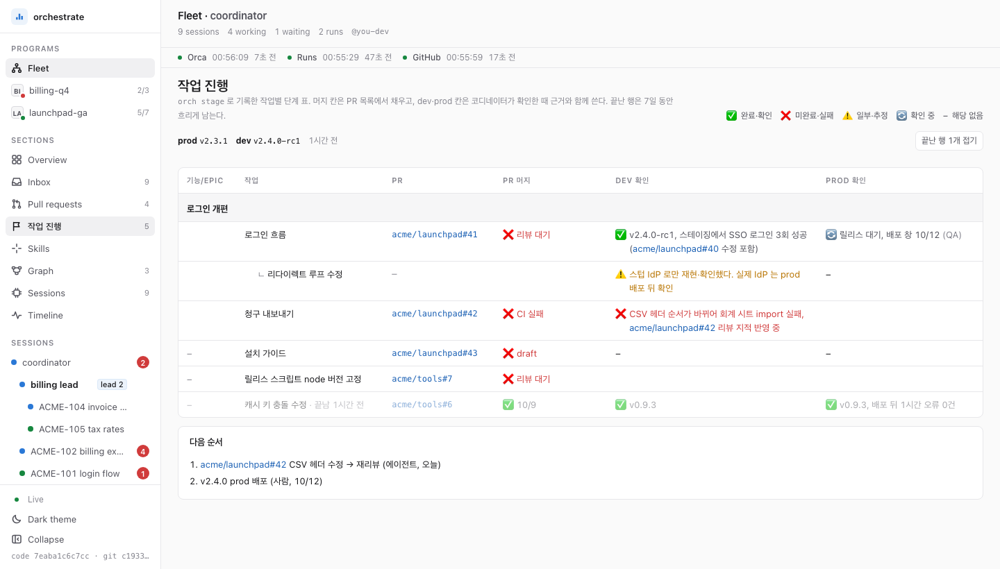
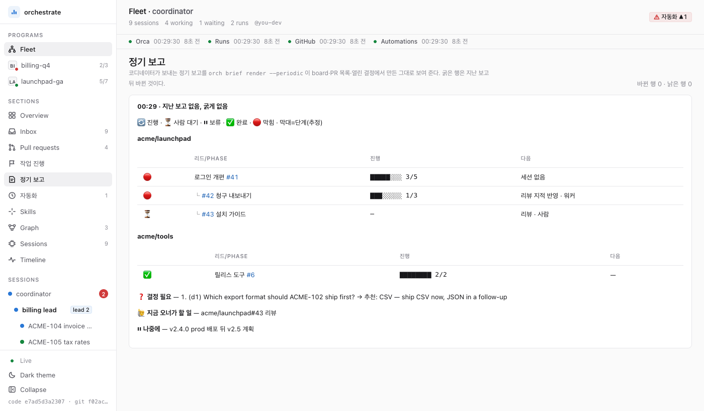

티켓을 주면 에이전트가 PR·머지·기록까지. 사람은 정해진 지점에서만.
Claude Code 플러그인입니다. 티켓 하나를 구현·리뷰·머지·기록까지 끌고 가는 흐름과, 여러 에이전트로 프로젝트 하나를 끝내는 흐름을 스킬로 묶었습니다.
/plugin marketplace add JeongJaeSoon/agent-skills
/plugin install agent-skills@jeongjaesoon무엇이 달라지나
설치한 뒤 맡길 수 있는 일의 크기가 셋입니다.
티켓 하나
첫 편집부터 머지까지
구현·테스트·독립 리뷰·PR·머지를 한 흐름으로 끝내고, 티켓 상태와 노트도 맞춰 둡니다.
프로젝트 하나
여러 티켓을 나란히
티켓마다 에이전트를 따로 띄워 동시에 돌리고, 완료 조건을 채울 때까지 착지시킵니다.
머신 하나
세팅과 뒷정리
새 PC 설정을 diff 로 보여 주고, 끝난 세션이 남긴 프로세스·브랜치를 정리하고, 리뷰 요청을 챙깁니다.
어떻게 돌아가나
일은 사람에서 PR 쪽으로 내려가고, 보고는 거꾸로 올라옵니다.
- 사람목표와 규칙을 정한다
- 오케스트레이터일을 나누고 보고를 모은다
- 리드프로젝트 하나를 끝까지
- 카드티켓 하나를 맡은 세션
- PR머지, 티켓 갱신, 노트
- 오케스트레이터
- 모든 에이전트 세션을 내려다보는 최상위 Claude Code 세션. 직접 고치지 않고 나눠 맡긴다.
- 리드
- 프로젝트 하나를 맡아 티켓을 카드에 나눠 주고 머지 순서를 정하는 세션.
- 카드
- git worktree 하나에서 티켓 하나를 맡은 Claude Code 세션. 작은 일은 리드 없이 바로 카드로 간다.
사람은 어디서 개입하나
기본은 사람이 루프 위에서 지켜보는 방식(human-on-the-loop)입니다. 아래 표시한 지점만 사람이 루프 안에서 직접 승인합니다(human-in-the-loop).
- 계획
- 구현
- 테스트
- 리뷰
- 머지 *
- 기록
- 지켜보다가 멈춘다진행 상황은 대시보드와 현황 보고로 봅니다. 마음에 걸리면 그 세션이나 프로젝트를 멈춰 둡니다.
- * 머지그 저장소의 머지를 허용하는 규칙이 있으면 에이전트가 머지합니다. 없거나 프로젝트를 "사람 승인" 정책으로 두면 사람이 승인해야 머지됩니다.
- 설정 적용사용자 설정은 에이전트가 diff 만 보여 주고, 적용은 사람이 명령 한 줄로 합니다.
- 자격 증명토큰·비밀번호는 에이전트가 보지 않습니다. 브라우저 칸에 넣을 때도 값은 macOS 키체인에서 페이지로 바로 가고, 기본으로 사람의 Touch ID(macOS 지문 인증) 승인을 거칩니다.
- 되돌릴 수 없는 일삭제, 외부 공개, 사람 몫의 결정 앞에서는 멈추고 묻습니다.
실제 화면
대시보드의 두 화면입니다. 데모 데이터로 찍었고, 누르면 원본 크기로 열립니다.




시작하기
Claude Code 안에서 네 단계입니다.
플러그인 설치
/plugin marketplace add JeongJaeSoon/agent-skills다음/plugin install agent-skills@jeongjaesoon. 설치 창이 응답 언어, 체크아웃 경로, 개인 설정 저장소 URL을 묻습니다. 모두 비워도 됩니다.새 세션 열기
setup-pc를 제안합니다. 받아들이면 에이전트가 체크아웃을 clone 하고, 바뀔 설정을 파일별 diff 로 보여 줍니다.gh가 로그인돼 있지 않으면! gh auth login을 칩니다.한 줄 적용
diff 를 읽고 에이전트가 건넨
!명령 한 줄을 입력칸에 붙여 넣습니다. 에이전트는 사용자 설정을 직접 쓰지 않습니다.권한 승인, 재시작
동기화 작업과 정기 자동화를 켜는 권한 창을 승인하고, 세션을 다시 엽니다.
일부 기능은 Orca 와 macOS 가 필요합니다. 여러 에이전트를 나란히 돌리는 흐름은 Orca(멀티 에이전트 IDE)를, 15분마다 도는 동기화와 일부 감시 작업은 macOS 의 launchd 를 씁니다(Linux 는 crontab 줄을 대신 출력). 준비물과 셸에서 직접 설치하는 법은 새 PC 안내와 준비물을 봅니다.